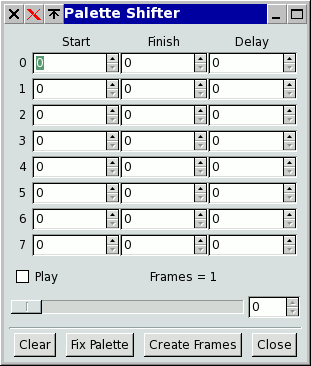
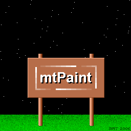
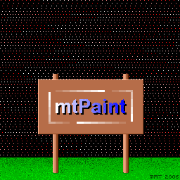
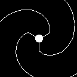
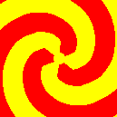

mtPaint is able to edit frames of animations and also generate animation frames with the layer facilities. If you have the program Gifsicle installed you can also create an animated GIF file. If you don't have Gifsicle already you can download it HERE.
When you attempt to load a GIF file that has several frames, mtPaint will load the first frame, detect there are more and then give you a message to ask what you want to do with the file. You can either leave it at that, or load up to the first 100 animation frames into layers, or export ("explode") all the frames into a directory to edit them as separate files, or view the animation in Gifsicle's gifview.
Frames can be loaded, or exported, in one of 3 ways:
If you do "Explode frames", then mtPaint will prompt you for a temporary directory to store these frames in. It is advisable to create a new folder (via the file selector) near the original GIF file for easy navigation.
After mtPaint has created these frames, a new mtPaint process will be started with the frame filenames in the command line window. You click on a frame filename and this will be loaded so you can edit it as a normal image.
Once you have finished editing the frames and you want to create the new animation file, select 'Export GIF animation' from the file menu to bring up the file dialog. The frame delay box sets the delay in 1/100ths of a second between each of the frames. This value should be remembered from when the animation was loaded, but it may not be accurate if the input file has several different delay values. In the filename box enter the new filename e.g. 'new.gif' and then save the file to your preferred location.
Here is an example of the steps you might take to create a simple animated GIF file:
Using layers to create an animation can save a lot of time and effort. Instead of editing each frame pixel by pixel you set up key frames defining the positions of all the layers. Once you are happy with the setup you can create all of the frames at the touch of a button as mtPaint will calculate all of the 'in between' frames. You will need to be very comfortable using layers, so if you aren't I would suggest you read the section on layers.
Once you have come up with an idea for an animation you need to prepare your plans before using mtPaint. For example you need to decide on issues like final image size, frames per second, number of colours used and total animation duration.
Before starting work on the animation it is advisable to create a new directory to put all of the image files in as this makes file management much easier. You then create a background image which will set the size of the final animation. Finally you create and save each of the image layers that you want in the animation.
Once the image layers are in place you can then configure the animation with the menu option 'Frames->Configure Animation'. Here you determine the first and last frame numbers, the name of the directory to hold the frames, and various other details.
After you have positioned each of the layers for the first frame, you select the menu option 'Frames->Set key frame'. You can then do this for further key frames in the animation. In the positions tab of the configuration window, you could have the following 2 lines:
1 10 10 255 0
10 20 20 128 0
This layer will begin at position (10,10) in frame 1 and move to (20,20) at frame 10 with opacity changing from 100% (255) to 50% (128). Each of the frames 2-9 are calculated by mtPaint as in between frames. The 0 at the end means this will be a straight line. A value of 1 would mean mtPaint moves this layer on a slightly smoother curve between the given points.
The cycles tab is used to determine which layers are visible at any particular time. Up to 100 lines can be entered in the following format:
frame1 frame2 layer1, layer2, layer3, ... , layer50
Up to 100 layers can be listed on each line. Between the 2 frames of the animation only one of the sequence will be visible, with the others being switched off. As the frame increments, the next layer in the sequence will be shown, and the previous one hidden.
For example:
1 10 1, 2, 3
Will cycle the visibility of layers 1, 2, 3 between frames 1 and 10.
The background layer (layer 0) is never hidden; you can use it as a placeholder, on the steps when none of the layers in the sequence should be visible. And when several layers at once should be shown on a single step, you list them in parentheses.
For example:
1 16 0, (2, 3, 4)
Will alternately turn layers 2, 3 and 4 off and on - all three of them at once - between frames 1 and 16.
Normally frame2 will be greater than frame1, but if they are equal you can then manually set which layers are visible or invisible at that frame. For example:
15 15 10, 11, 12, -1, -2, -3
Will show layers 10, 11, 12 and hide layers 1, 2, 3 at frame 15.
You can then preview this animation by pressing the preview button (or by using the Frames menu) and dragging the slider to view the animation. You can also use the arrow keys, page up/down keys, or + or - keys to change frames.
When you are happy with the animation you have created you can export the frames with the 'Create Frames' button. The file format you choose determines the type of images that will be generated; if it supports RGB, mtPaint will output RGB frames, if not, indexed (using Wu quantization to reduce the number of colours if needed). If the format supports alpha and your animation has transparent background, frames will have alpha transparency. See section A.2 for information on which format supports what. The compression options (if any) for the format need be chosen in the Preferences window beforehand.
If you have selected the GIF format, mtPaint will generate indexed palette GIF files, but you can choose PNG and it will generate RGB or RGBA PNG files. You can then use encoding software such as Gifsicle, img2webp, ffmpeg, or mencoder to turn these frames into an animation file. If encoding to GIF files, mtPaint will attempt to call Gifsicle automatically and create the animated GIF for you. On GNU/Linux systems gifview will also be used to display the result.
Here is an example of how to get mencoder to create an MPEG file with RGB PNG files:
mencoder mf://*.png -mf fps=25 -ovc lavc -lavcopts vcodec=mpeg4 -o output.avi
Here is how to get ffmpeg do a similar thing:
ffmpeg -r 25 -f image2 -pattern_type glob -i '*.png' -vcodec libx264 output.mp4
Here, how to create an animated WebP file with img2webp:
img2webp -v -o output.webp -lossy -q 90 -d 40 *.png
For more information on how to use mencoder, check out the mplayer home page HERE
For more information on how to use gifsicle, check out the home page HERE
For more information on how to use img2webp, check out the user guide HERE
For ffmpeg, look HERE, HERE, and HERE
If you are composing a particularly long animation that needs more than 100 lines in the position or cycle table you can simply copy the layers file and have different files for each section of the animation. For example 'layers00001-00500.txt' could be for the first 500 frames and 'layers00500-01000.txt' could be for the second 500 frames. You then create the frames as normal in each case and knit them together with your favourite encoder software.
Here are some examples of animations created with mtPaint and Gifsicle. Click on each image to download the source files:
Although mtPaint is mainly geared towards indexed palette pixel art, it is also capable of creating RGB animations which use a larger canvas, a higher frame rate, and with variable opacity for the layers. Here are some examples:
When creating the frames for this animation you are advised to use a low value for PNG compression, in the range of 1 to 5. See section A.2.1 for more information on PNG compression settings.
Palette shifting is an old technique used to create the illusion of movement by shifting palette colours between set limits. Because it is palette based, it only works on indexed palette images. The palette shifter in mtPaint is invoked by using the Palette menu option, which will show you the following dialog:

Each row represents a palette shift in the sequence with the first two numbers representing the first and last numbers of the palette colours to be shifted. By reversing the numbers you will reverse the direction of the shifting. The delay is the number of frames to wait before the next shift, with zero meaning no delay.
Here are two images:

If you load the first image into mtPaint, and then call up the palette shifter dialog you can reproduce the animation by entered the following data:
13,6,0
50,19,0
51,82,0
In order to make it clearer how I created the image, here is a version of the image with a slightly different palette to expose the hidden colours:

Once you have created an animation you are happy with, you can create an animated GIF using the following steps:
Here are some more examples of palette shifting, along with the source image and the inputs required to create them:
1,60,0
 1,16,0
1,16,0 